This is my family, my family is 6 people and I have 4 siblings and one has died, so my siblings have 3 and I am the youngest. I will introduce my family, my father is named Osman Bin Mohd, my mother is Khadijah Binti Bakar, my first brother Mohammad Syazwan Bin Osman, my second brother Muhammad Fitri Bin Osman, my third brother has passed away he is named Muhammad Nadzmi Bin Osman, lastly my name is Muhammad Hafiz Bin Osman. In this picture does not have my third brother
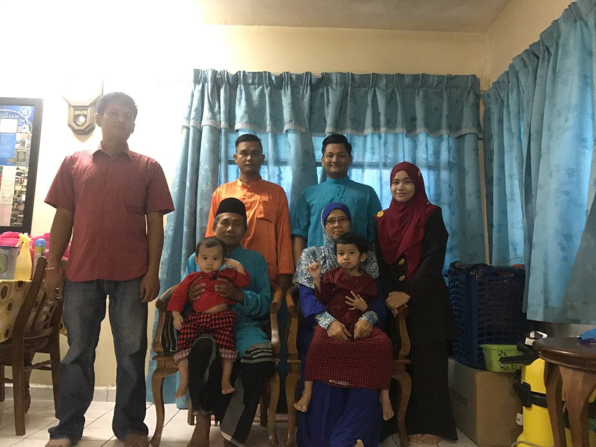
My family has grown when my second brother married my sister -in -law, my sister -in -law named Norzihan Binti Mohd Tawil. My brother's family has had four children, the first a girl named Sumayyah, the second a son named Adam, the third a son named Umar, and the youngest a daughter named Hawa


 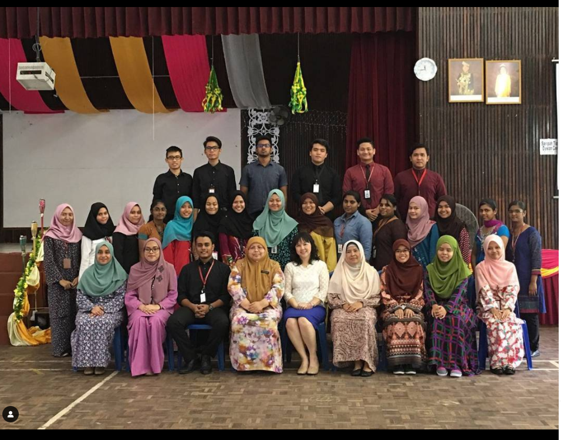
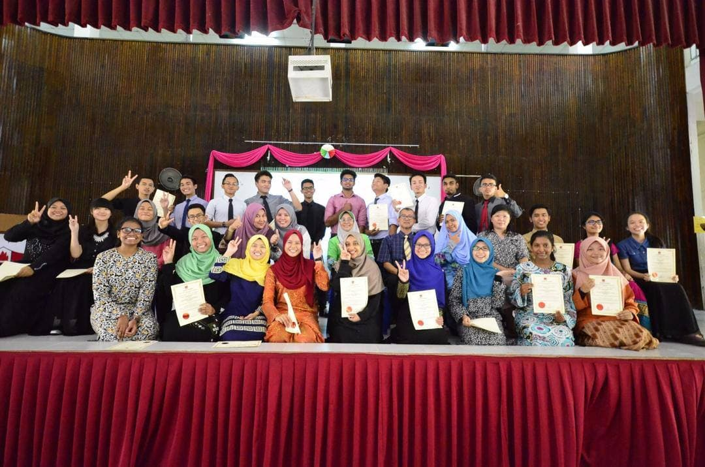
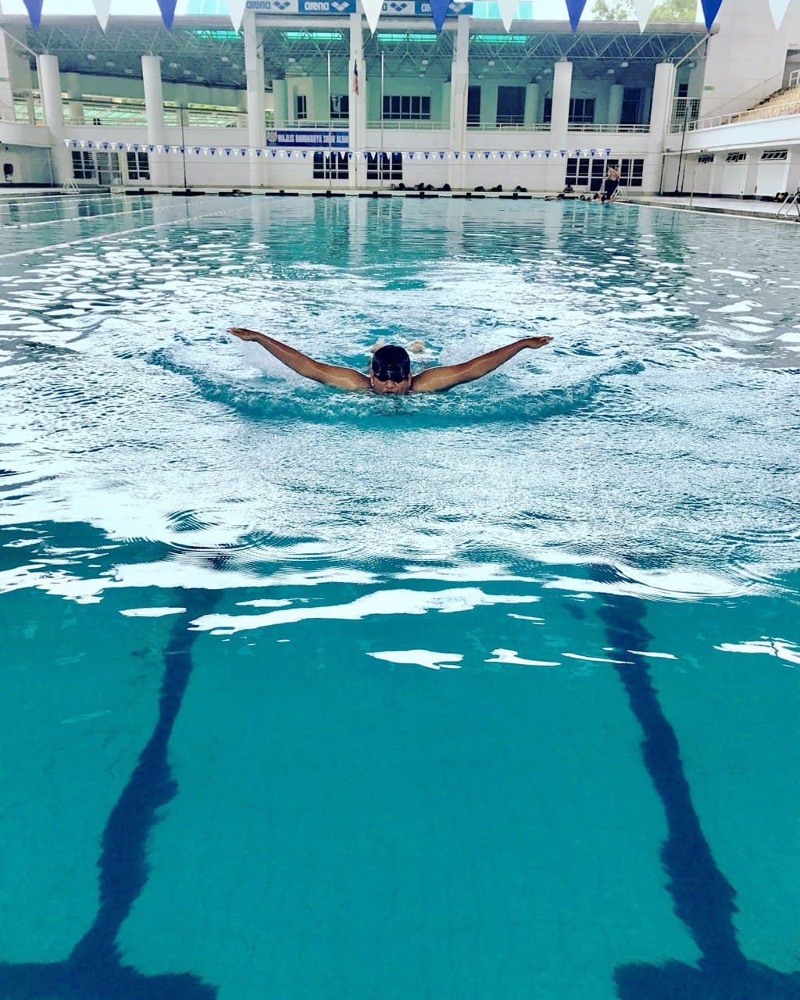
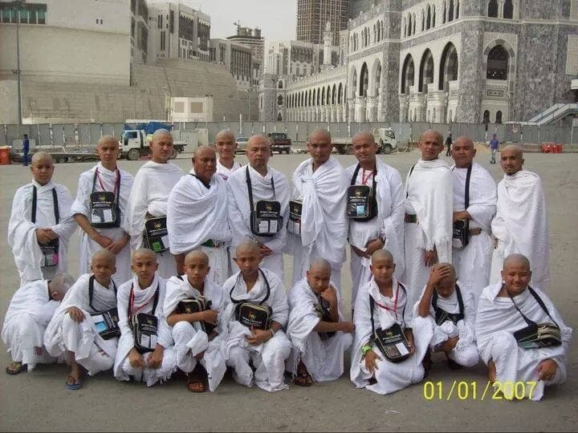
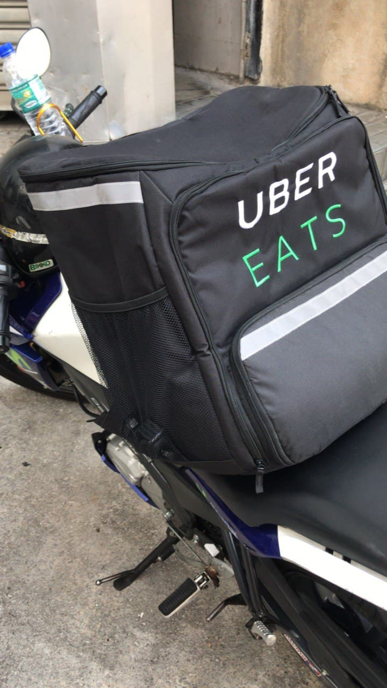
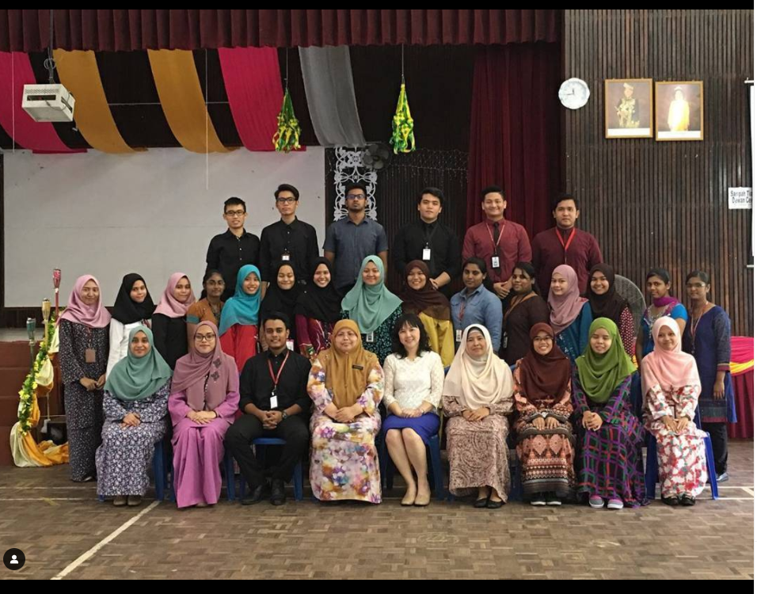
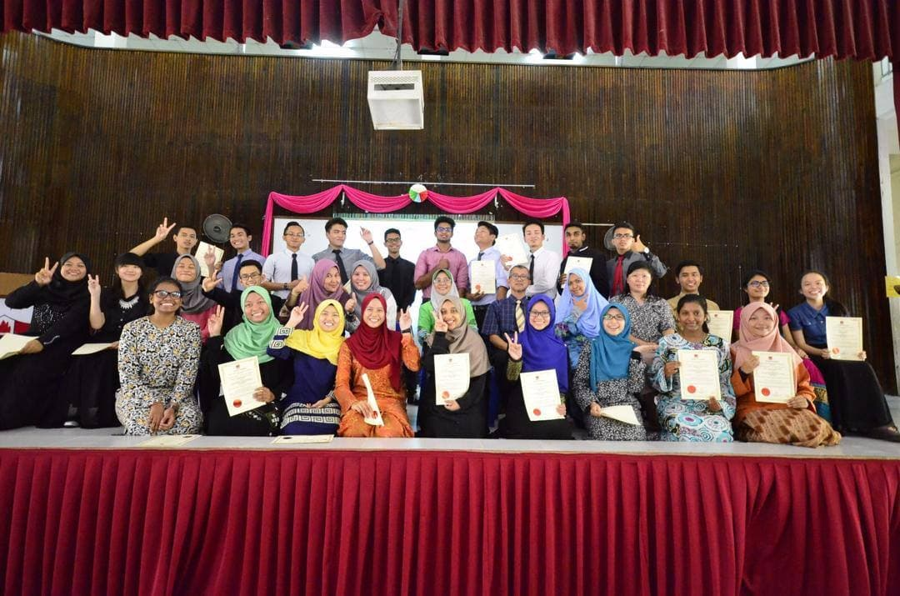
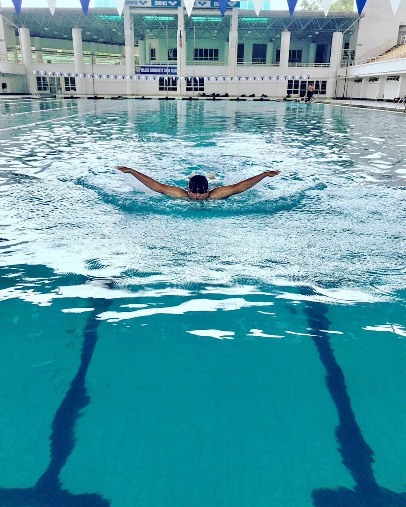
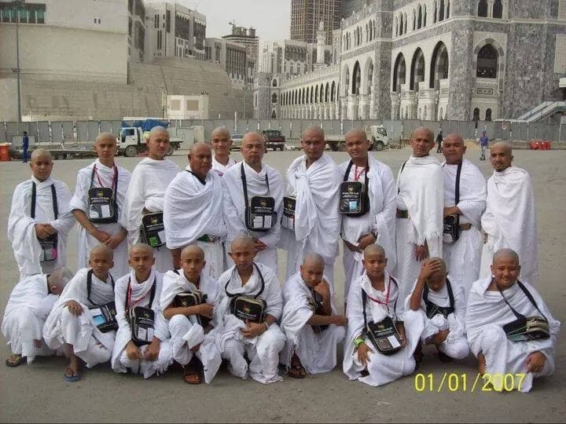
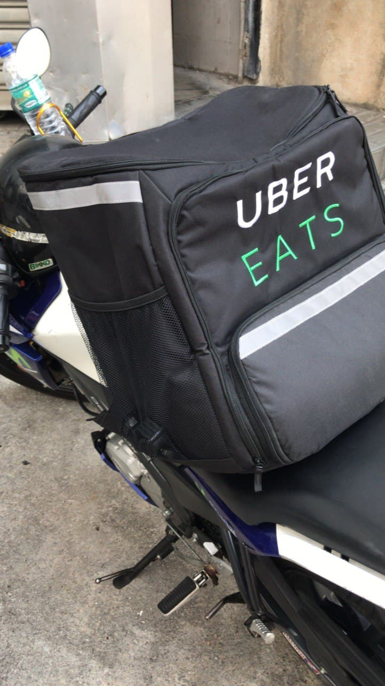